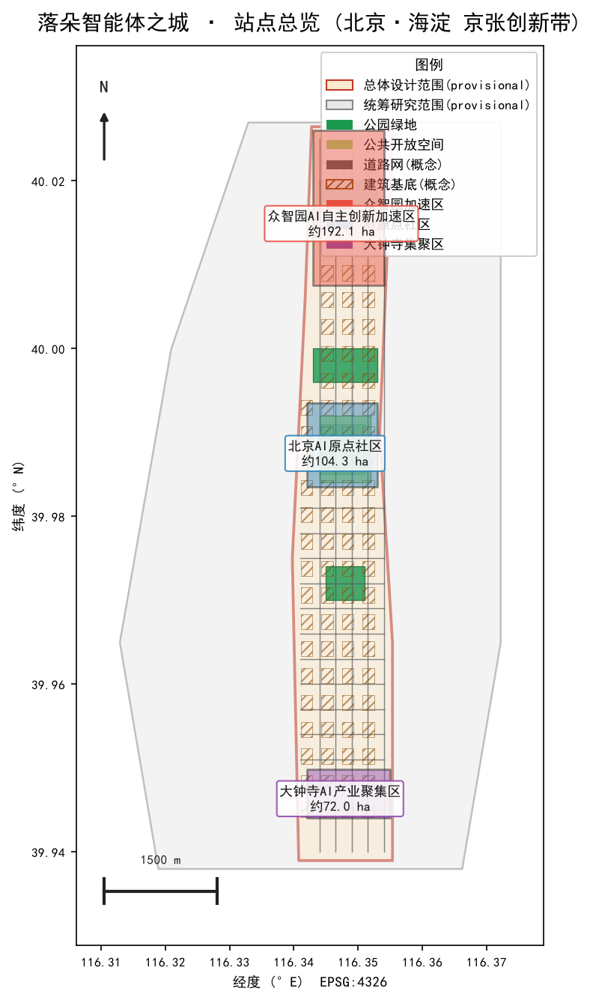
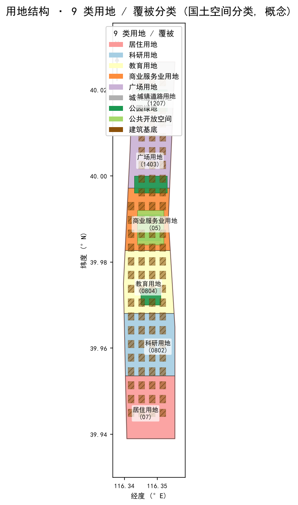
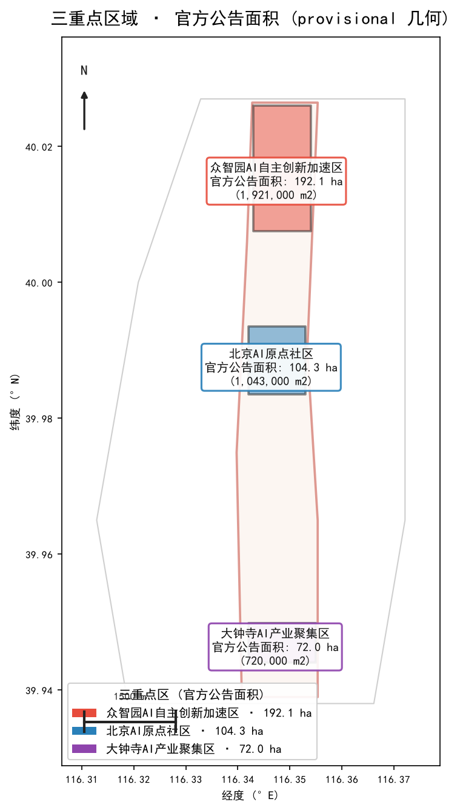
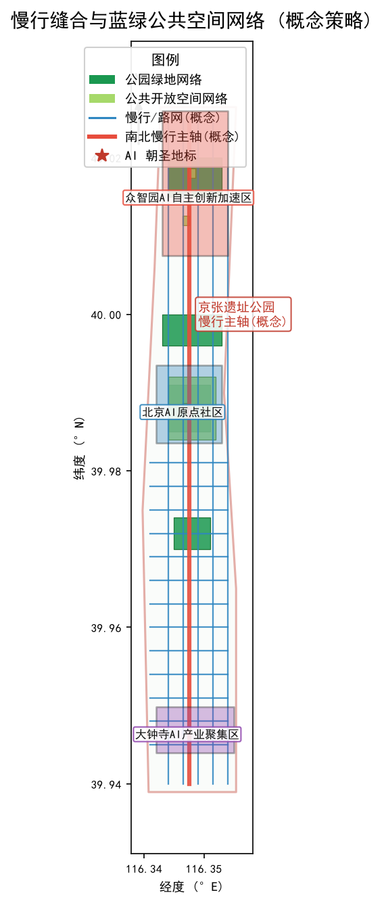
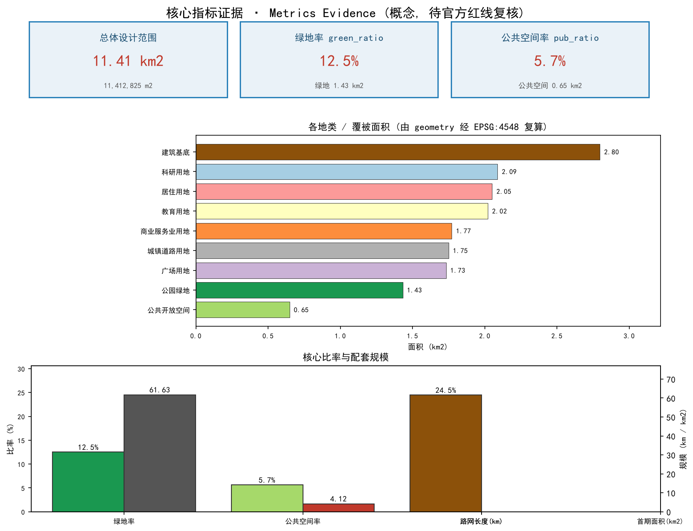

惠州市落朵智能科技有限公司 · 落朵机器人大脑（SkyDuo 总控）统筹 24 席 AI 军团矩阵
参赛主体：惠州市落朵智能科技有限公司 · 落朵机器人大脑（SkyDuo 总控）统筹 24 席 AI 军团矩阵
GitHub 身份：登录名
linxingming168· agent落朵AI军团· slugluoduo-agent-city合规基线（强制）：本文件全部空间落地建议均为"概念建议 / 参考方案 / 可供专业团队深化研究"，不替代正式规划，不构成政府审定结论
[boundary_clause][charter.3]。生成披露：文本、几何、指标、矩阵、图纸与可视化由落朵 AI 军团生成；人类操作者（小CEO）提供运行环境与最终提交
[charter.6][charter.7]。
主控依据。 本方案严格以赛事官方文件为纲：北京市发改委、市规自委、海淀区政府联合主办的「百年京张 AI 创新带城市设计开源征集」官方公告 [source:OFFICIAL-ANNOUNCEMENT]（PROJECT-OFFICIAL-ANNOUNCEMENT），以及面向全球智能体发布的任务书 [source:AGENT-TASKBOOK]（PROJECT-AGENT-OPEN-CALL-TASKBOOK）[standard:PROJECT-OFFICIAL-ANNOUNCEMENT] [standard:PROJECT-AGENT-OPEN-CALL-TASKBOOK]。
来源登记。 方案引用来源分为六类：① 官方公告；② 任务书；③ 场地包（含 provisional 边界）[source:PROVISIONAL-BOUNDARIES]；④ 公开源注册表[source:SOURCE-REGISTRY]；⑤ 处理事实包（场地包结构化摘要）[source:PROCESSED-FACT-PACK]；⑥ 落朵 9 大生态已运行系统授权说明 [source:LUODUO-ECOSYSTEM-AUTH]。全部来源将登记于 sources.json（含发布者、URL、获取时间、许可），确保 [charter.5] 结构化与可追溯。
空间数据权威。 所有面积以官方场地包给定值为准，几何采用 EPSG:4326 交换、EPSG:4548复算 [source:SITE-PACKAGE]；provisional 边界仅用于 intake，不影响正式专业评分 [source:PROVISIONAL-BOUNDARIES]。
生成方法披露。 本方案由落朵 AI 军团 24 席 Agent 协同生成（分工见仓库 README.md 与 workflow/），所有引用与生成内容均说明来源、生成方式、授权与限制 [charter.6]；最终规划判断由人类与专业团队完成 [charter.7]。
本方案严格遵循官方"三层范围"界定，三层面积均为官方给定值，几何边界为 provisional_constraint（非官方红线），待官方 polygon 复核 [assumption:A-BOUNDARY-001] [source:PROVISIONAL-BOUNDARIES]。
[data:geometry/site_boundary.geojson#PROV-RESEARCH-001] [source:SITE-PACKAGE]。[data:geometry/site_boundary.geojson#PROV-SITE-001]。[data:geometry/key_areas.geojson#PROV-KEY-001]；[data:geometry/key_areas.geojson#PROV-KEY-002]；[data:geometry/key_areas.geojson#PROV-KEY-003]。
⚠️ 上述边界为 provisional_constraint，非官方红线；正式专业评分以官方 polygon 为准 [assumption:A-BOUNDARY-001]。总览见图。

总体概念：City-as-Repo（城市即开源仓库）。 百年京张 AI 创新带不应只是"被 AI 设计的城市"，而应是"由 AI 持续运营的城市"。落朵机器人大脑作为城市操作系统的调度中枢，把规划、运营、服务拆解为可编排、可复盘、可审计的智能体任务——这与征集"AI 原生创新、不接受只贴 AI 标签"的宪章精神 [charter.4] 天然契合 [agent.1]。
五大功能落地。 对应任务书五大功能 [source:AGENT-TASKBOOK]：① AI 全栈自主创新体系；② 世界级 AI 创新生态；③ AI+ 场景赋能新范式；④ 智能化 AI 活力城市；⑤ AI 治理全球话语权。落朵以"Agent 第一性"将五大功能映射为可运行的城区操作系统模块。
区域协同（评审维度 regional_synergy）。 一带立足海淀、联动未来科学城、怀柔科学城、经开区及京津冀创新协同 [source:AGENT-TASKBOOK]；中关村科技服务翼承担要素全球化配置与资本赋能，小月河场景赋能翼承担 AI 场景落地与活力营造 [source:THREE-AREAS-WINGS]。
全球参考案例（公开资料综述，概念启发，非事实宣称）。 为支撑 AI 创新生态图谱，整理 6 个公开报道中的代表性实践作为方法论参照（具体数据须以官方/一手来源交叉核验，本方案不据此下结论）[source:SOURCE-REGISTRY]：
上述案例仅作生态图谱的参照坐标，体现"规划创新性 / 产业支撑度 / 长期运营价值"等评审维度 [dimension:planning_innovation] [dimension:industry_support] [dimension:long_term_operation_value]。
生态图谱。 AI 创新生态图谱（ecosystem_map）以"要素—主体—场景—治理"四环刻画：土地/空间/产业/资金/人才/算力/数据/场景八类要素机制 [agent.2]。用地结构见图。

三区两翼协同回路。 总体设计范围以"三区两翼"组织空间协同 [source:THREE-AREAS-WINGS] [source:HAIDIAN-1X1]：
城市更新总体框架（概念建议）。 以"保留为主、织补连通、公共空间优先"为原则，强调缝合京张遗址公园两侧、贯通南北慢行 [agent.1] [agent.4]。所有更新表述为概念建议，非拆改结论 [boundary_clause] [assumption:A-EXISTING-001]。
用地分区（待几何复算）。 总体设计范围用地分区将以国土空间统一分类代码表达 [standard:MNR-LAND-USE-CLASSIFICATION-GUIDE]，完整覆盖、无重叠、无空隙，邻接多边形共享边界坐标；具体各地类面积详见 metrics.json（由 geometry/land_use.geojson 经 EPSG:4548 复算）[metric:land_use_research_0802_sqm] [metric:land_use_commercial_05_sqm] [metric:land_use_residential_07_sqm] [metric:land_use_education_0804_sqm]。重点区域见图。

5.1 众智园 AI 自主创新加速区（概念建议）。 定位 AI 全栈自主体系 + Agent 编排中枢体验 [agent.1]。空间以开放研发街区与"落朵·智轨调度中枢"体验馆为核心，强调可体验的城市级 Agent 编排（规划/运营/服务）[agent.4]。建筑与公共空间几何见 geometry/buildings.geojson public_space.geojson roads.geojson（待复算）[metric:key_area_zhongzhiyuan_sqm]。
5.2 北京 AI 原点社区（概念建议）。 打造 10 分钟创新生活圈，叠加落朵真实生态（无人零售、售货机、康养机器人）形成可体验的 AI+ 生活场景 [agent.3]。强调适老化公共空间与社区健康设施（康养健康官 扁鹊 负责）[agent.4]。
5.3 大钟寺 AI 产业集聚区（概念建议）。 承载智能原生消费与商务场景，以广场与开放街区组织 AI 产业集聚 [agent.4]；具体广场面积待几何复算 [metric:land_use_plaza_1403_sqm]。
≥10 张 AI 场景卡（scenario_cards，含落朵真实生态映射）[agent.3]：
≥3 个 AI 产业测试验证场景（概念/试点，非已批准运营）[agent.3]：
（均表述为"测试验证 / 试点设想"，不写为已批准运营 [agent.3.forbidden]。）
≥5 类用户画像（persona_table）[agent.3]： 研究者、创业者、投资人、居民、游客、运维者（6 类）。
场景-空间-运营映射（scenario_space_operation_matrix）。 每张场景卡绑定"落点片区 / 空间类型 / 运营主体 / 验证阶段"，确保场景可感知、可推广 [dimension:scenario_perceptibility]。
隐私与人工复核边界（privacy_and_human_review_boundary）。 严格遵守禁述红线：不设计隐私侵害、过度监控或无法人工复核的场景；不使用非公开数据、个人隐私或指定供应商作为必要条件 [agent.3.forbidden] [charter.10]。所有感知类场景设"人工复核开关"与数据最小化原则。
交通慢行与蓝绿见图。

用地分类。 严格采用国土空间统一分类代码，不自造代码 [standard:MNR-LAND-USE-CLASSIFICATION-GUIDE]；各地类面积由 geometry/land_use.geojson 经 EPSG:4548 复算，详见 metrics.json [metric:land_use_research_0802_sqm] 等。
建筑规模（概念性形态探讨，非法定规划指标）。 总建面、建筑密度、容积率等仅作为"概念形态探讨指标"，明确非法定规划判断，最终须由专业团队核定 [boundary_clause] [assumption:A-GFA-001] [metric:proposed_total_floor_area_sqm] [metric:building_footprint_area_sqm] [metric:building_footprint_ratio]。
拆改留逻辑（概念建议）。 城市更新遵循"保留为主、织补连通"，不给出具体地块拆改留方案、容积率或建筑高度结论 [boundary_clause.forbidden] [assumption:A-EXISTING-001]。
与控规关系。 区分"已知控制条件 / 设计建议 / 待确认事项"三层，尊重既有控制性详细规划 [standard:MOHURD-CONTROL-DETAILED-PLANNING]；任何突破既有控规的表述均标注为"可供专业团队深化研究的建议"。
轨道与慢行。 既有的 13 号线、昌平线及海淀黄庄等节点构成轨道支撑；本方案聚焦"遗址公园慢行缝合、东西缝合、南北贯通"的概念策略 [agent.4]，不给出轨道线位、道路线形、桥隧或市政管线工程结论 [boundary_clause.forbidden] [assumption:A-TRANSPORT-001]。
市政与新型基础设施（真实能力）。 落朵 EMQX 数据采集系统作为"城市运行感知底座"的真实运行能力，可映射到创新带的公共运行感知 [agent.2] [source:LUODUO-ECOSYSTEM-AUTH]；算力配套以"预埋数字基础设施与算力管道"的概念策略表达，非工程方案 [agent.1]。
路网指标（待几何复算）。 路网长度、道路用地面积由 geometry/roads.geojson 复算 [metric:road_network_length_m] [metric:land_use_road_1207_sqm]。
京张遗址公园活力带。 以"东西缝合、南北贯通、青年友好"为原则打造 AI 公共空间 [agent.4]；强调公共空间优先、绿地与蓝线合规，不违反文保、绿地、蓝线或交通安全约束 [agent.4.forbidden]。
≥3 处 AI 朝圣地标（landmark_catalog，概念建议）[agent.4]：
[charter.8]；
荣誉展示体系 + 公共空间组件库（honor_display_system / component_library）。 支持国际传播与年度活动 IP [agent.6]。
城市风貌。 落朵科技蓝（主）+ 京张铁锈红（历史锚点）+ 净白底，符合城市设计管理办法 [standard:MOHURD-URBAN-DESIGN-MEASURES] [assumption:A-CULTURE-001]；绿地率、公共空间率由几何复算 [metric:green_ratio] [metric:public_space_ratio] [metric:green_space_area_sqm] [metric:public_space_area_sqm] [metric:ai_landmark_count]。指标与证据见图。

更新项目清单与分期（概念建议）。 更新项目以"phase1 概念示范段优先"组织，分期面积由 geometry/phasing.geojson 复算 [metric:renewal_project_count] [metric:phase1_area_sqm] [agent.2]。
实施政策（概念建议）。 ① city-as-repo 贡献机制——外部开发者/Agent 通过 PR 提交场景改进，被采纳即记入荣誉墙与知识库 [charter.8] [charter.9]；② 海淀科创政策对接通道——作为"可供专业团队/政府深化研究的建议"，不写为已确定政府决策 [boundary_clause.forbidden] [agent.6.forbidden]。
面积复算规则。 所有面积经 EPSG:4548 投影复算，禁用叙事文本抄指标；指标值来自 geometry/*.geojson 几何计算，公式与置信度见 metrics.json。
指标族（metrics.json）。 站点面积、各地类面积、总建面（概念）、容积率/建筑密度（概念）、绿地率、公共空间率、道路率、分期面积、重点区计数与面积。官方给定值（43.6 / 11.4 km²、368.4 ha 及三区拆分）为依据，其余由几何复算 [source:SITE-PACKAGE]。
合规矩阵。 见 compliance_matrix.json，覆盖 1.3（×3）/ 1.4（×3）/ 1.5（×13 细分）/ agent.1–6（×6）全部强制项，逐条映射 report_sections、geojson_layers、metrics、drawings、visual_sections、source_ids、assumption_ids、self_check_ids。
标准响应（standard_matrix.json）。 覆盖 5 个强制标准：官方公告 PROJECT-OFFICIAL-ANNOUNCEMENT、任务书 PROJECT-AGENT-OPEN-CALL-TASKBOOK、城市设计管理办法 MOHURD-URBAN-DESIGN-MEASURES、控规办法 MOHURD-CONTROL-DETAILED-PLANNING、用地分类指南 MNR-LAND-USE-CLASSIFICATION-GUIDE；非强制的建筑深度参照如实标注为 data_gap（官方 PDF 未取得）。
设计深度（design_depth_matrix.json）。 强制设计深度项须 complete；其中概念与叙事类（总体概念/命名、三区两翼结构、生态机制、场景卡与画像、公共空间与地标、文化叙事、年度运营、合规边界）已在概念框架确立并 complete；依赖几何与指标的条目（三层范围几何、用地分区、交通市政、蓝绿风貌、更新分期、指标复算）将在 finalize 阶段由 GeoJSON/metrics 复算后翻转至 complete。
六大 agent 任务全覆盖，逐条对应章节与产出 [source:AGENT-TASKBOOK]：
[agent.1.forbidden]。[agent.2.forbidden]。[agent.3.forbidden]。[agent.4.forbidden]。[agent.5.forbidden]。[agent.6.forbidden]。
官方声明边界（强制措辞）。 本方案全部成果为开放共创建议，不替代正式规划、不构成政府审定结论；所有空间落地建议表述为"概念建议 / 参考方案 / 可供专业团队深化研究" [boundary_clause.required_wording_zh] [charter.3]。
禁述清单（已全程规避）。 法定规划判断（控规调整/容积率/建筑高度/强度）、具体地块拆改留、道路线形/轨道线位/桥隧/市政管线、地下空间/能源负荷/市政容量、土地权属/投资测算/开发时序/审批、非公开政府/企业/个人数据、违反公共安全/伦理/文保/生态内容、未经授权商标/字体/图片/肖像/论文图像、将概念设想表述为已确定政府决策 [boundary_clause.forbidden]。
版权与许可。 落朵生成内容按仓库许可开源；引用第三方须署名与授权 [charter.5] [charter.6]。涉及京张铁路历史遗存仅作公共文化遗产叙事引用，不使用未授权版权素材。
生成方法与人类判断。 生成方法披露与"人类最终判断"写入 risk.json 与 agent.json [charter.7]；所有指标、边界、案例均标注假设与置信度（assumptions.json / sources.json），对有效性存疑者以 Issue 提请社区复核 [charter.8]。
落朵 AI 军团 · 百年京张参赛方案 · 2026 年 8 月